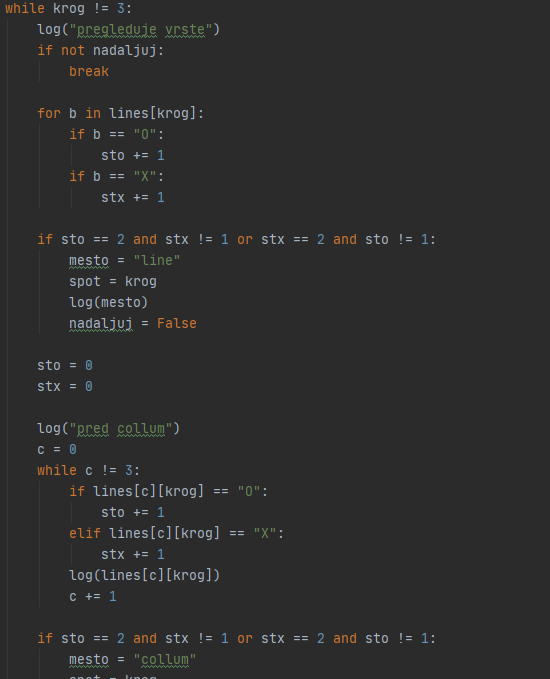
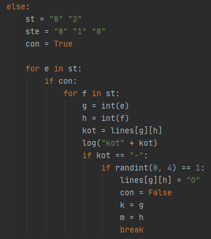

Namenje zadolzena, da postavlja krogce na dobra mesta. To naredi v dveh fazah. Prvo preveri igralno mrezo, ce je kje nujno, da postavi krogec, v drugi fazi pa izbere mesto, kamor ga postavi. |
||||||||||
Kako preveri igralno mrezo?Vrstice in stolpci
Ce hoces preveriti koliko krogcov in krizcev ima vrstica v seznamu lines, spreminjas samo drugo pozicijsko stevilo. npr:
lines = [[x,x,x],[o,-,x],[o,-,o]] zato za pregled vseh vrednosti v prvi vrstici lines[0][a]. Za stolpce je pa ravno obratno in je za prvi stolpec potrebno pregledati lines[a][0].
Za pregled stolpcev je ena zanka, ki se trikrat ponovi in spremeni stevilo vrstice in stolpca in znotraj te zanke je en for loop za vrstice, ki ce so v vrstici dva enaka znaka brez nobenega drugega znaka konca vse zanke in poskrbi, da je v tej vrstici krogec, za stolpce je pa se ena dokler zanka, ki spreminja prvo pozicijsko stevilo, deluje pa enako kot prvi for loop. |
|
|||||||||
Vertikalno
Pri vertikalnem nisem nasel nobenega uporabnega zaporedja in je bilo manj dela samo napisati ce stavke, ki so pregledovali, ce so dva enaka znaka sama kje. Ce najde, se to shrani v spremenljivko v kateri pise, v katerem kotu se zacne vertikalna crta.
|
||||||||||
|  | ||||||||||
Postavitev krogcaNa zacetku je ce stavek. Ce se je pri pregledu igralne mreze odkrilo kaj zanimivega je v to vrstico,stolpec... postavilo krogec, drugace se je pa zacel else stavek, ki je postavil krogec nekam drugam. |
||||||||||
Ce je naslo kaj
Potem so tri ce stavki, ki preverijo, ce je potrebno postaviti kroge v stolpec, vrstico ali postrani. Ce ga je potrebno postaviti v stolpec ali vrstico z zanko, najde prazno mesto in ga tam postavi. Ce pa je postrani, pa s tremi ce stavki najde prazno mesto in tam postavi krogec.
|
||||||||||
Else:
V tri v vrsto so koti najboljsa pozicija za postavitev, zato sem naredil seznam z dvema stevilkama 0 inn 2 potem pa dva for loopa eden v drugem, da sem dobil vse mozne kombinacije teh stevk. (1 je vedno v sredini vrstice, stolpca). Potem preveri, ce je kot prost in ce je se izvede se en ce stavek, ki preveri, da ni naljucna vrednost od 0 do 2 1 in ce je res postavi v tisto pozicijo svoj znak.
Mozno je tudi, da ni krogec postavljen v noben kot in zato imam se en seznam z vrednostmi 0, 1, 2 s katerim lahko s pomocjo for loopov dobim vse mozne kombinacije. Potem preveri, ce je mesto prosto in s pomocjo ranint(0,4) izbere malo nakljucno pozicijo. |

k in m sta vrednosti ki ju funkcija vrne |
|||||||||
Konecko funkcija postavi kamorkoli krogec, shrani vrednost, od katere lahko dobimo pozicijo od novonastalega krogca, ki jo na koncu vrne. |
||||||||||